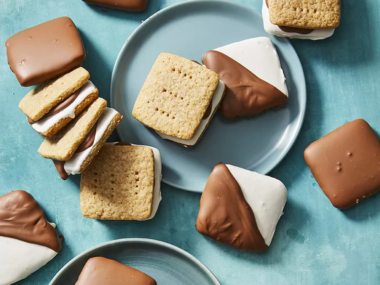

S'mores Cookies

Description
Everything you need to know to make S'mores Cookies.
Ingredients
Cookies
- ⅓ cup milk
- ¼ cup honey
- 1 tablespoon vanilla extract
- 2 cups all-purpose flour
- ¾ cup packed brown sugar
- ½ cup whole-wheat flour
- 1 teaspoon baking soda
- ½ teaspoon salt
- ½ cup cold butter
Marshmallow Icing
- ½ (7 ounce) jar marshmallow creme
- 1 cup powdered sugar
- 2 tablespoons butter, softened
- 3 tablespoons milk, or more as needed
Chocolate Icing
- 12 ounces milk chocolate, chopped
- 2 teaspoons vegetable shortening
Steps
- Stir together 1/3 cup milk, honey, and vanilla extract in a small bowl. In a large bowl, stir together all-purpose flour, brown sugar, whole-wheat flour, baking soda, and salt. Cut in 1/2 cup cold butter, using a pastry blender, until mixture resembles coarse crumbs. Stir in milk mixture just until combined. If needed, knead gently to form a ball. Divide dough into fourths. Wrap each portion in plastic wrap and chill until easy to handle, about 1 hour.
- Preheat oven to 350 degrees F (175 degrees C).
- On a lightly floured surface, roll 1 portion of dough into a 6-inch square. Cut into 2-inch squares. Arrange 1 inch apart on an ungreased cookie sheet. Prick with a fork. Bake until edges are firm, 7 to 9 minutes. Remove; cool on a wire rack. Repeat with remaining dough.
- For marshmallow icing, stir together marshmallow creme, powdered sugar, and 2 Tablespoons butter in a bowl. Stir in enough milk to reach dipping consistency. Dip cookies into icing, allowing excess to drip off. Arrange on wire racks set over wax paper; let stand until set.
- For chocolate icing, microwave chocolate and shortening in a small bowl, stirring twice, until smooth, about 90 seconds. Spoon about 1 tablespoon melted chocolate over each cookie to coat. Let stand on a wire rack set over wax paper until set.
- For sandwiches: Dip one side of cookie in marshmallow icing. Dip one side of another cookie in chocolate icing; sandwich cookies, icing sides facing in. Let set.
- For half and halfs: Dip half the cookie in the marshmallow icing and half in the chocolate icing. Let set.